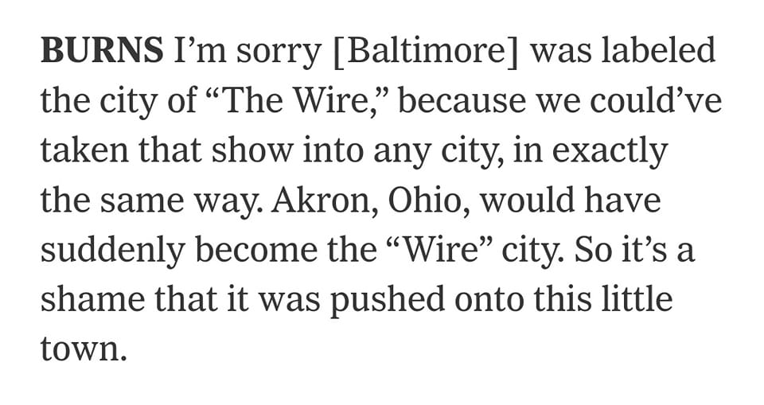

Mobile uploads
Jesus-Fucking-Christ. First, Tucker Carlson called Akron a War Zone and now the writers of The Wire bring up Akron Ohio as well.
If Dan Horrigan becomes mayor next year for the third time we deserve everything we get as a city because we'll prove we're too apathetic and lazy to choose something better for ourselves.